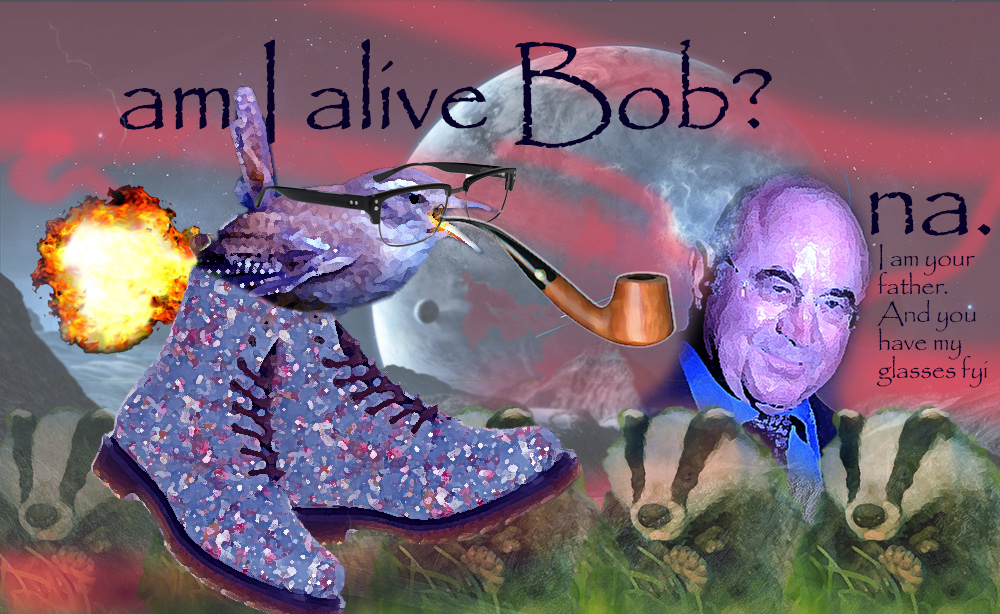

the Poetry bit
When poetry falls out of my face, approximately 39% gets caught in my beard, so I shake it off into the webernets. Mandatory readings in these troubled times. Especially potato.
I am vaguely a whelk and yet I am coherently a poetician, dovahkiin, mage, film director, astral projectionist, part-time badger farmer, sexual deviant and table.
Partake of some fully wet poetry, read some heart-rending short stories, or piss right the eff off and let me die!
When poetry falls out of my face, approximately 39% gets caught in my beard, so I shake it off into the webernets. Mandatory readings in these troubled times. Especially potato.

Fables from the broken witterings of a troubled sleep, that occasionally make wet and always trouble.
Poetician, Guru, night-time Russian boxer, Liverpool striker, Man About Town 1998 (Croydon), psychotic warped trouserless idiot: I am many things to many people. Let me die!

A series of films spanning a deflating 12 year career as a screenwriter/director in papua new guinea.